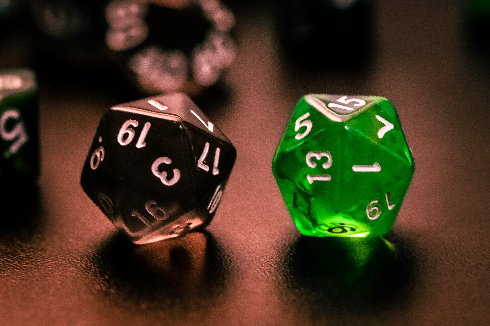

Dungeons & Deans: On Seminars, Side-Quests, and Academic Leveling

Seminars and the Peak of Mount Stupid
While the first two posts in this series focused on methods and assumptions, this one is about academic life, especially for PhD students. A little while ago, a PhD student told me, with full confidence, “I don’t need to attend this social-science seminar. I have a computer science degree—what could I possibly learn?” Every time I hear this, I think: Ah yes, year two of the PhD—the scenic hike up to the Peak of Mount Stupid. It’s that stage where competence is still catching up to confidence and where people begin to believe that anything outside their immediate niche is optional. And yet, skipping seminars is one of the very few genuine no-go’s in academia. If there is a seminar, you go. I was in one last week; I will be in two this week. Not because attendance magically makes you a better researcher (I wish), but because seminars are one of the rare places where you witness how other people actually think.
Seminars are where you see how someone structures an argument, justifies a design, recovers when a result misbehaves, handles skepticism, or occasionally pulls off something surprisingly elegant with a design that looks questionable on paper. They are where you absorb patterns of reasoning, not just content. That is what compounds over time. The belief that you “can’t learn anything” from someone outside your field is not confidence—it is inexperience disguised as certainty.
Enter Dungeons & Dragons (and Deans)
And because a lot of today’s PhD students (and, frankly, their supervisors) grew up on games and genre fiction, I find it oddly fitting to frame this in terms of Dungeons & Dragons. Thanks to Stranger Things, D&D is back in mainstream culture anyway, and the analogy is uncomfortably accurate: academia really does resemble one long, chaotic campaign. Seminars are side-quests, senior scholars are high-level characters with intimidating proficiency bonuses, and Deans… well, Deans are dragons: ancient, inscrutable, and slightly enigmatic, sitting on enormous hoards of institutional wealth, occasionally handing out quests that can dramatically alter your trajectory, breathing fire when provoked, and always scheming in the background—less focused on any single character sheet and more on keeping the whole campaign world from falling apart.
Levels, Proficiency, and Academic Intuition
In D&D, your character has a class and a level, which indicate what they are good at and how much experience they’ve accumulated. Whenever you attempt something uncertain—persuading an NPC, recalling obscure lore, picking a lock—you roll a twenty-sided die and add bonuses. The key one is the proficiency bonus, which grows with level and applies across many different skills. The higher your level, the more reliably you succeed, even in areas where you’re not formally specialized. A level-18 bard can often outperform a level-3 wizard on a lore check—yes, even the wizard’s favorite skill—because the bard has simply rolled the dice more often.
Translated into academia, this explains why a senior scholar can wander into your talk, listen for ten minutes, and calmly point out a conceptual flaw you never saw coming. It’s not magic. It’s the +6 proficiency bonus in “General Academic Intuition,” earned through hundreds of talks, thousands of papers, countless failures, and even more rejections. You don’t get that bonus by staying home.
Wizards, Fighters, Rogues… and Bards
If you map academics to D&D classes, the parallels become hard to unsee. Some are wizards—brilliant, specialized, occasionally incomprehensible. Some are fighters—relentless, methodical, and frighteningly productive. Some are rogues—uncannily good at spotting weaknesses in arguments or loopholes in identification strategies. Some are clerics—the quiet backbone of departments who keep programs, supervision, and morale from falling apart. And some of us are bards. I very much consider myself one of them: someone who knows a little about a lot, can improvise across topics, and relies on charisma, performance skills, and self-deprecating humour far more often than on deep lore or perfectly memorized spellbooks. None of these classes is superior. What really differentiates them is not class, but level.
In every RPG, ignoring side-quests means that sooner or later you run into a boss you simply cannot beat because you are under-leveled. The same is true for a PhD. You can focus entirely on your dissertation, avoid everything outside your main quest line, and feel very efficient—right up until you face a challenge (a conceptual critique, a talk, a reviewer) that you are not leveled enough to handle. Seminars are where you quietly accumulate the proficiency bonus you will one day rely on without even noticing it.
The Moral of the Story
Which brings us back to the student who “couldn’t possibly learn anything” from a seminar. In D&D terms, that is like refusing XP because it comes from the wrong creature type. In academic terms, it is a reliable indicator of someone still in the early levels, not yet aware of how much more there is to become good at.
So the moral of the story is simple: go to the seminars. Treat them like side-quests. Treat them as opportunities to gain the experience points you don’t yet realise you need. One day, when you roll your metaphorical d20 in front of a room full of people and hope your argument holds, you will be very grateful for every point of proficiency bonus you picked up along the way.
May your seminars be worthwhile, your XP bar steadily fill, and your encounters with Deans and dragons be memorable, survivable, and only occasionally on fire.